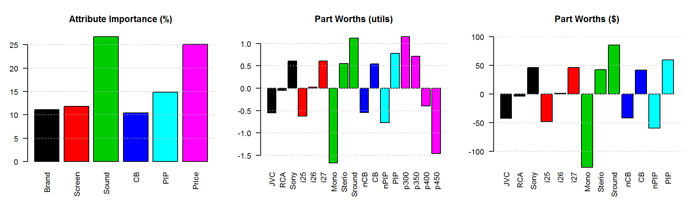
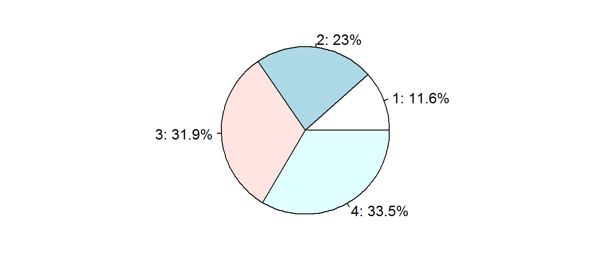
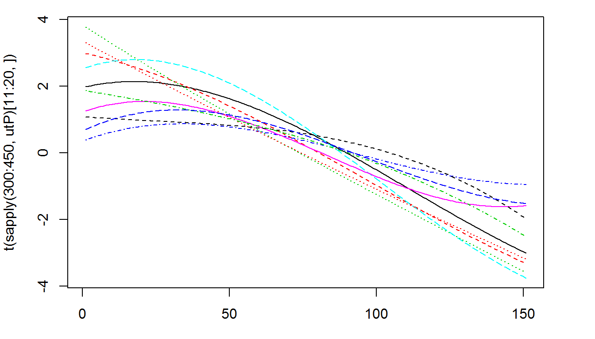
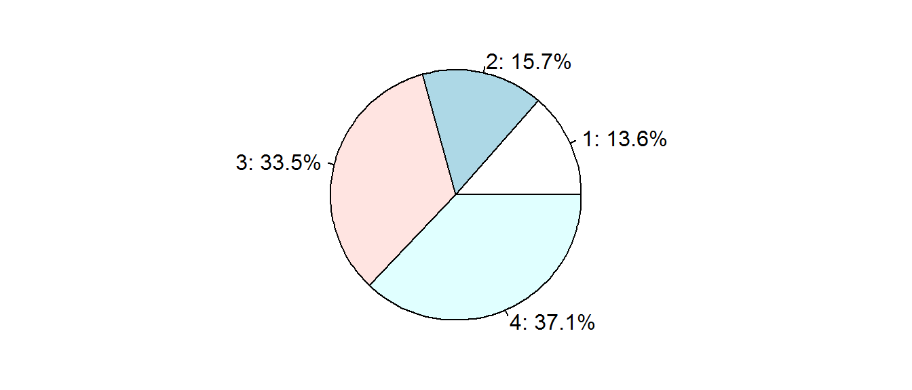
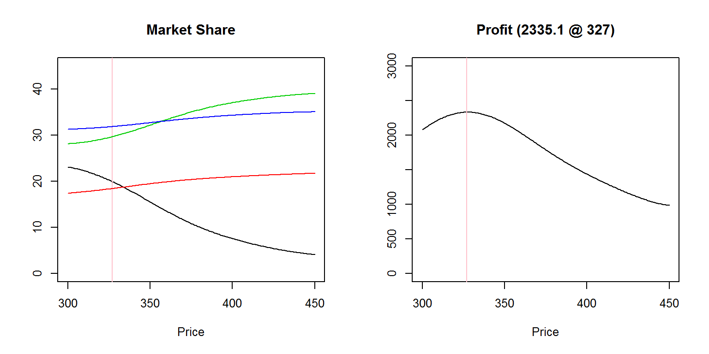

5 A mLogit CBC Example
5.1 The TV Dataset
The TV dataset is the outcome (part worths matrix for 352 respondent) of a mLogit CBC shared by SawTooth Software. There five attributes:
- Brand: JVC, RCA, Sony. It helps to evaluate brand equities
- Sound: Mono, Sterio, Sround.
- CB (Channel Block): nCB, CB
- PIP (Picture in Picture): nPIP, PIP
- Price: 300, 350, 400, 450. It helps to evaluate part worths in monetary unit.
pw = read.csv("../tv/tv.csv")
levels = names(pw)
att = c(3,3,3,2,2,4)
names(att) = c("Brand","Screen","Sound","CB","PIP","Price")
levcol = c(1,1,1,2,2,2,3,3,3,4,4,5,5,6,6,6,6)
apw = apply(pw,2,mean)
ppw = 200 * apw[1:13]/(apw[14]-apw[17])
im = c(apw[3]-apw[1], apw[6]-apw[4], apw[9]-apw[7],
apw[11]-apw[10], apw[13]-apw[12], apw[14]-apw[17])
im = 100 * im/sum(im)
names(im) = names(att)
par(mar=c(5,3,4,2),mfrow=c(1,3))
barplot(im,las=2,col=1:length(im),main="Attribute Importance (%)")
abline(h=seq(5,25,5),lty=3,col='grey')
barplot(apw,las=2,col=levcol,main="Part Worths (utils)")
abline(h=seq(-1.5,1.0,0.5),lty=3,col='grey')
barplot(ppw,las=2,col=levcol,main="Part Worths ($)",ylim=c(-120,100))
abline(h=seq(-100,100,50),lty=3,col='grey')
這個案例有兩個常用的重要屬性：
- 價格： 可以讓我們把 效用 轉成 貨幣 單位
- 品牌： 讓我們可以計算 品牌權益
跟JVC相比，消費者平均願意為SONY這個品牌多付多少錢呢？
除了「功能」之外，我們可以把「情感」或「社會」性的屬性，也拿來用聯合分析做產品設計嗎？
除了產品設計之外，你可以舉出聯合分析的其他應用嗎？
你可以講出聯合分析的(全面性的)應用範圍嗎？
5.2 Multinominal Logit Model
In this CBC, the respondents’ part worths are estimated by Multinominal Logit model. mLogit is similar to Logistic, but it acts on target variables of more than two levels. As explained in 1.6, given a specific product, respondent’s utility is still the sum of part worths.
在 mLogit 模型裡面，我們一樣是用線性模型估計選項對每一位受測者的效用：
pds = list(c(1,2,1,2,1,1),c(2,1,1,2,2,2),c(3,2,2,1,2,3),c(3,3,3,2,1,4))
ut = sapply(pds, function(pd) rowSums(pw[ pd + c(0,3,6,9,11,13) ]))
head(ut)## [,1] [,2] [,3] [,4]
## [1,] -0.135 -1.841 2.931 -0.427
## [2,] -2.998 2.629 1.934 0.745
## [3,] 0.473 0.928 -0.411 -1.518
## [4,] 0.534 -0.563 1.148 -1.535
## [5,] -5.063 -2.452 2.753 3.242
## [6,] -3.593 -4.841 2.637 3.054但是，我們不再假設消費者一定會選效用最高的產品，而是依據產品的相對價值，估計每一位受測者會購買各產品的機率。 受測者 \(i\) 會購買產品 \(k\) 的機率估計為： \[ P_{i,k} = \frac{exp(u_{i,k})}{\sum_J exp(u_{i,j})} \]
例如，第一位受測者買第一項產品的機率是： \[ P_{1,1}=\frac{e^{-0.135}}{e^{-0.135}+e^{-1.841}+e^{2.931}+e^{-0.427}} = 4.28\% \]
如果只有兩個產品，購買機率的公式會變成怎樣？
那如果只有一個產品呢？
接下來，我們用上面的公式把效用轉換成機率，
pb = t(apply(ut, 1, function (u) exp(u)/sum(exp(u)) ))
head(pb)## [,1] [,2] [,3] [,4]
## [1,] 0.0427638 0.0077655 0.9175 0.03193
## [2,] 0.0021753 0.6043557 0.3016 0.09185
## [3,] 0.3199120 0.5042368 0.1322 0.04369
## [4,] 0.3022983 0.1009287 0.5586 0.03818
## [5,] 0.0001529 0.0020819 0.3793 0.61849
## [6,] 0.0007815 0.0002244 0.3968 0.60216把受測族群的機率加總起來，就是該族群對各產品的期望需求數量，
(qty = colSums(pb) )## [1] 40.88 81.04 112.25 117.83然後，再換算成各產品的市佔率：
pcg = round(100 * qty/sum(qty),1)
par(mar=c(1,2,1,2))
pie(pcg,paste0(1:4, ": ", pcg, "%"))
5.3 Regression (Interpolation) of Price Coefficients
為了訂價的連續性，我們常常會需要對價格係數做迴歸(或內、外插)：
#utP = function(p) {
# if (p >= 300 & p < 350) ((350-p)*pw$p300 + (p-300)*pw$p350)/50
# else if(p >= 350 & p < 400) ((400-p)*pw$p350 + (p-350)*pw$p400)/50
# else if(p >= 400 & p <= 450) ((450-p)*pw$p400 + (p-400)*pw$p450)/50 }
p1 = c(300,350,400,450)
coef = apply(pw[,14:17], 1, function(x) lm(ut~.,data.frame(ut=x,p1,p1^2,p1^3))$coef )
utP = function(p) t(coef) %*% c(1, p, p^2, p^3)轉換函數utP()可以讓我們看到每一個受測者的價格敏感程度。
par(mar=c(3,4,1,3))
matplot(t(sapply(300:450,utP)[11:20,]),type='l')
有了轉換函數utP()， 就可以自由的預測不同價格之下的市占率。
pdp = list(c(1,2,1,2,1,325),c(2,1,1,2,2,399),c(3,2,2,1,2,410),c(3,3,3,2,1,450))
ut = sapply(pdp, function(x) rowSums(pw[ x[1:5] + c(0,3,6,9,11) ]) + utP(x[6]))
pb = t(apply(ut, 1, function (u) exp(u)/sum(exp(u)) ))
qty = colSums(pb)
pcg = round(100 * qty/sum(qty),1)
par(mar=c(1,2,1,2))
pie(pcg,paste0(1:4, ": ", pcg, "%"))
5.4 Market Simulation
然後就可以進行多產品市場的模擬：
# Define the marginal costs of parts
costs = rbind(c(60,70,70),c(50,70,120),c(0,20,80),c(10,50,0),c(0,50,0))
MC = function(pd) sum(sapply(1:5, function(i) costs[i, pd[i]] ))# Define the market as a list of products
pdp = list(c(1,2,2,1,2,0),
c(2,1,1,2,2,300),
c(3,2,2,1,2,350),c(3,3,3,2,1,400))
plst = seq(300,450)# Then we can simulate how the outcome varies with the price of the first product
mx = sapply(plst, function(x) {
pdp[[1]][6] = x
ut = sapply(pdp, function(z) {rowSums(pw[ z[1:5] + c(0,3,6,9,11) ]) + utP(z[6])})
pb = t(apply(ut, 1, function (u) exp(u)/sum(exp(u)) ))
qty = colSums(pb)
100 * qty / sum(qty) })
par(mfrow=c(1,2),cex=0.8)
profit = mx[1,] * (plst - MC(pdp[[1]]))
w = which.max(profit); pst=plst[w]
plot(plst,mx[1,],type='l',col=1,ylim=c(0,45),main="Market Share",
ylab="",xlab="Price")
abline(v=pst,col='pink' )
for(i in 2:nrow(mx)) lines(plst,mx[i,],col=i)
plot(plst,profit,type='l',ylim=c(0,3000),ylab="",xlab="Price",
main=sprintf("Profit (%.1f @ %d)",profit[w],pst))
abline(v=pst,col='pink' )
黑色產品藉由降價所獲得的市占主要來自哪一個產品？ 為什麼？
QUIZ-6 市占率與價格彈性
source("sim4.R")